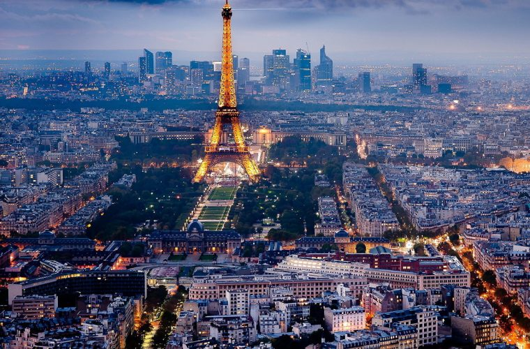
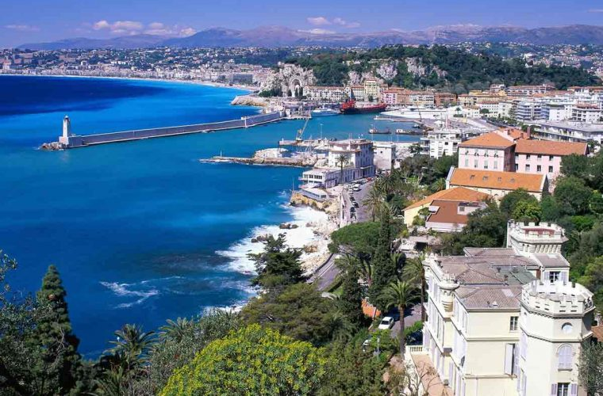
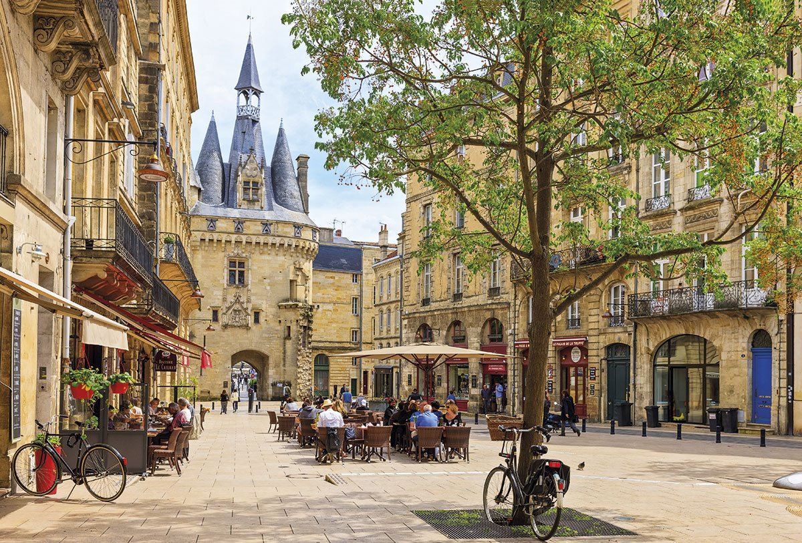
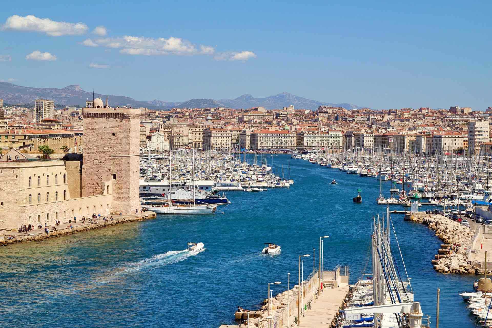

Francia se caracteriza por la oferta turística que presenta, la cual se enfoca en el arte, la historia y la gastronomía que mezclado con las distintas manifestaciones forman un conjunto de experiencias interesantes e inolvidables para el turista.
Lugares para visitar:
- París
- Niza
- Burdeos
- Marsella
Itinerario:
En 5 dias y 4 noches en paris se puede visitar y subir la torre Eiffel, ir al arco del triunfo en los campos elíseos, concoer el museo de louvre, pasear por Montmartre, disfrutar de un crucero por el río sena, pasar un dia en Disneyland Paris, visistar el palacio de Versalles y descubrir los viñedos de Paris.
Costos de viaje:
- Hotel estadia completa -> $380
- Comidas externas por dia -> $100
- Traslados por dia -> $15
- Ingresos y actividades -> $80
- Costos adicionales -> $70